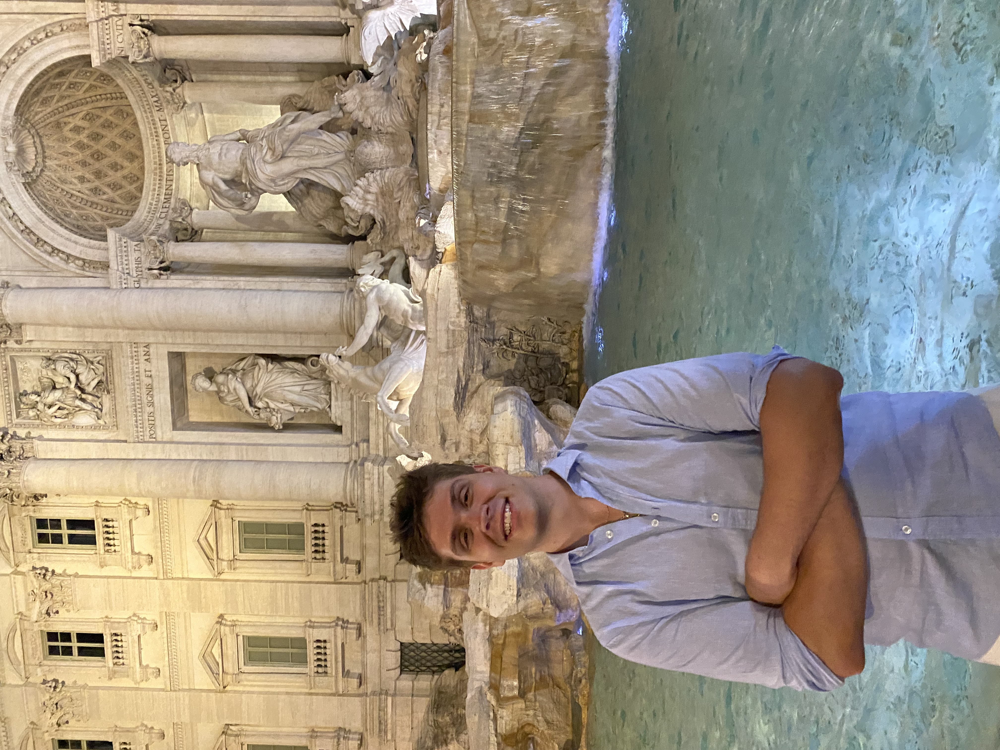

About Jimmy
I grew up in Des Plaines, Illinois right outside of Chicago in the north west suburbs. I'm currently a senior at the University of Iowa studying Buisness Analytics and Information Systems. As much as I've loved my time at Iowa I'm really excited to graduate this spring and start my professional career. Although this is a pretty scary time I'm super excited to start this next chapter in my life and see what the future has in store for me
Growing up I was alway a pretty active kid, I loved being outside. Baseabll was huge part of my childhood and my life, I love the sport and it was a huge passion of mine. I was planning to play all the way through college, but after a few injuries I decided it was time to hang up the cleats and focus on my education. That was probably one of the hardest decsions I had to make in my life but in the end it helped shape me into the person I am today.